Creature Lab 2.0 · Milestone A
Merperson redesign
Compare the human facial structure, linked shoulder and arm surfaces, and tail movement against the published prototype.
Swim and banking turn
Treading water for the first second, forward swim from 1.0 to 3.15 seconds, banked turn from 3.15 to 4.85 seconds, then back to idle. The clip uses the candidate Lab renderer, production materials and studio lights. The camera tracks the root so the stroke and banking stay visible.
Lab runtime
The baseline comes from the published GitHub Pages Lab. The candidate comes from an HTTP preview of the same application entry point. Both show the habitat at one simulated second of idle with the same perspective camera.
Lake Shelf

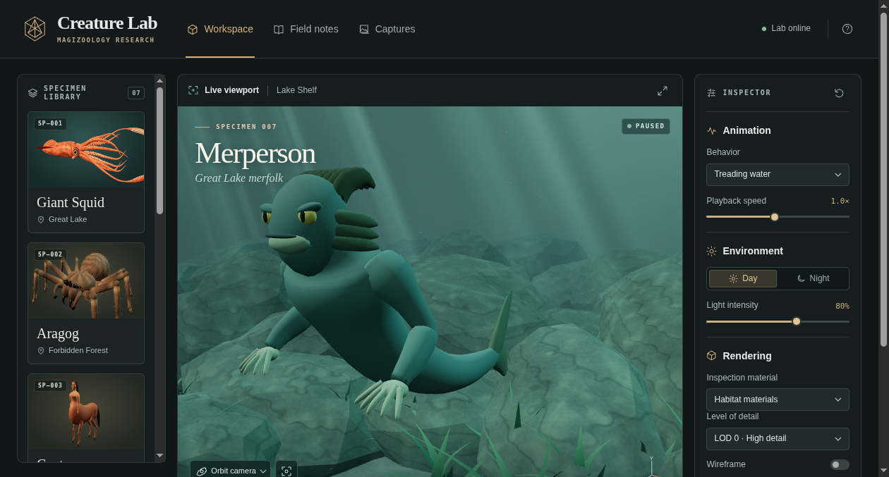

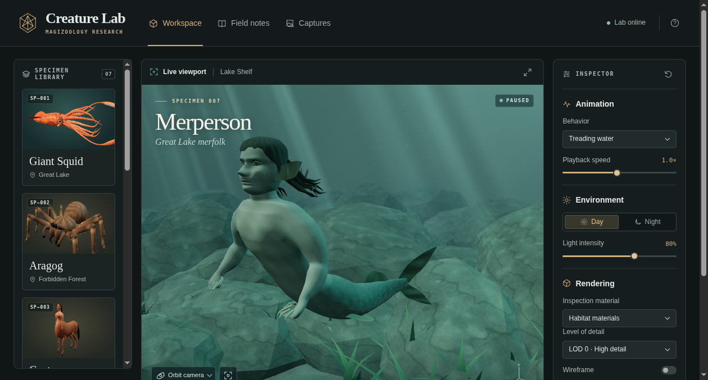
Matched inspection plates
Both revisions are at LOD 0 after one simulated second of idle. Each pair shares an orthographic camera, scale, exposure, background, and studio lights.
Front clay

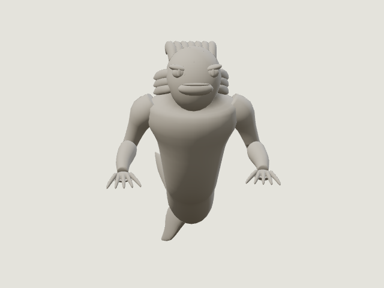

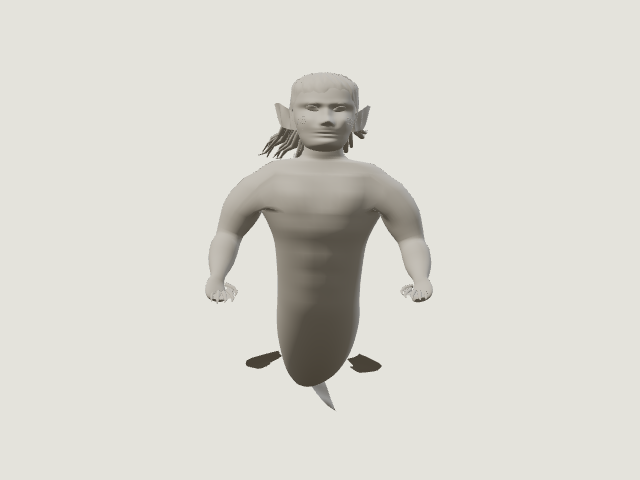
Side clay

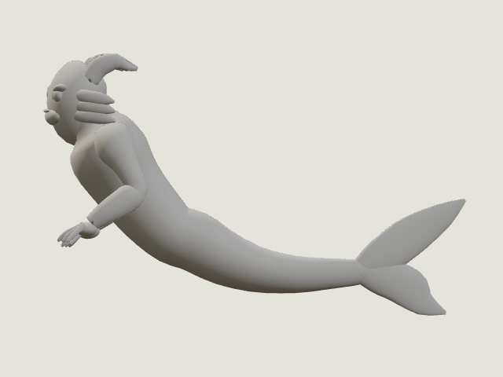

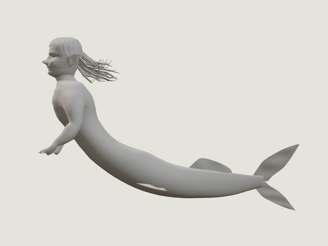
Three-quarter clay

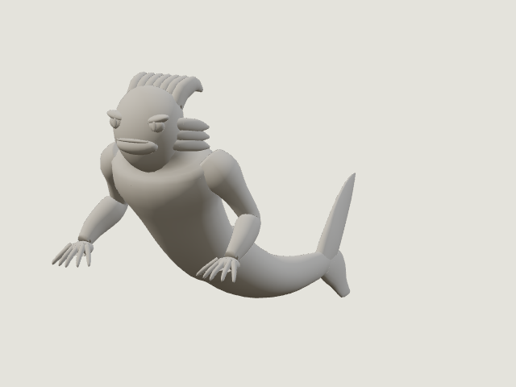

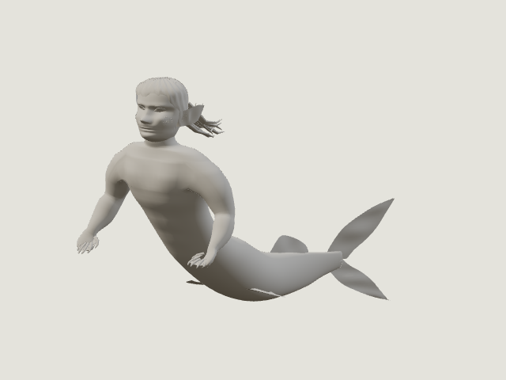
Front silhouette

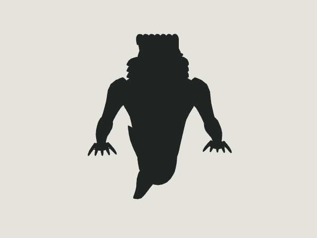

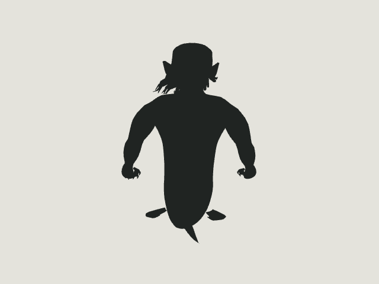
Side silhouette

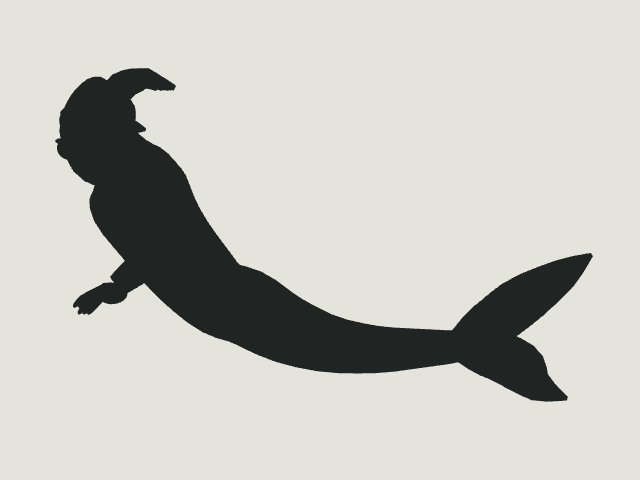

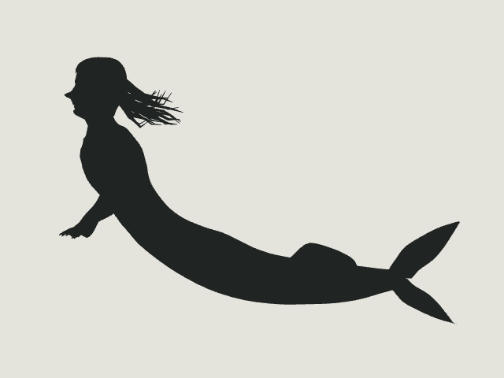
Face and gills

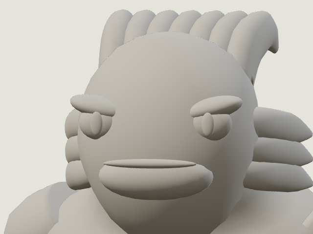

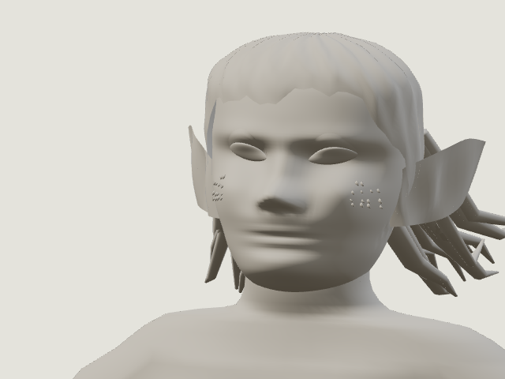
Shoulder and webbed hand

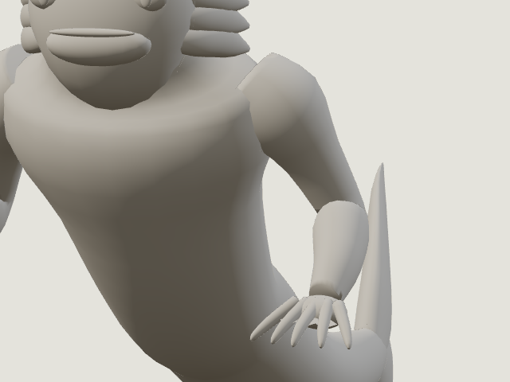

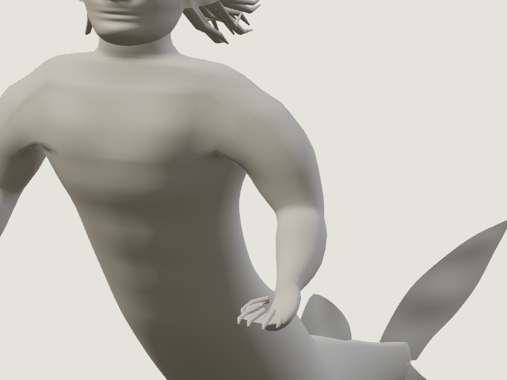
Torso-to-tail transition

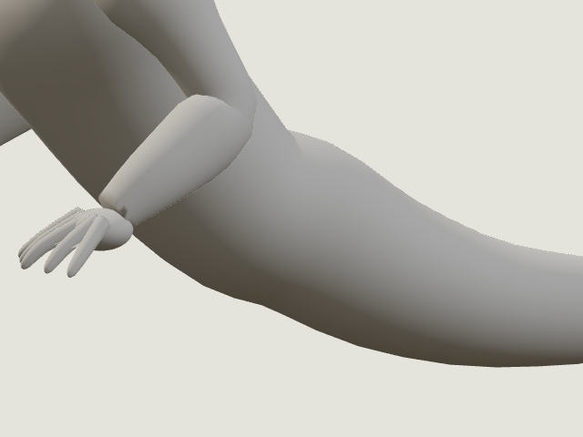

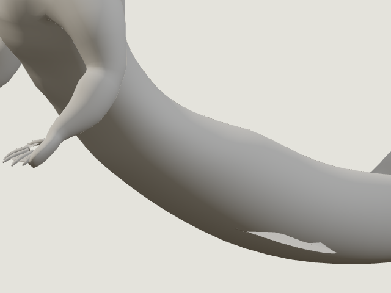
Performance
| Configuration | Triangles | Draw calls | Geometry (KiB) | CPU update (ms) |
|---|---|---|---|---|
| LOD 0 · 1 specimen | 18,980 → 45,674 | 41 → 20 | 373 → 1,204 | 0.443 → 0.004 |
| LOD 1 · 1 specimen | 7,604 → 18,248 | 41 → 20 | 154 → 480 | 0.099 → 0.003 |
| LOD 2 · 1 specimen | 2,590 → 7,112 | 41 → 19 | 58 → 194 | 0.030 → 0.005 |
| LOD 1 · 2 specimens | 15,208 → 36,496 | 82 → 40 | 307 → 960 | 0.191 → 0.007 |
Each run uses the 640 × 480 neutral Lab viewport. The CPU column reports median time per simulation step, including the Lab camera and habitat update. Geometry bytes count the visible specimen buffers at the active LOD. No specimen geometry buffer was replaced during steady swimming. Allocation rates and actual GPU residency were not measured. The available renderer was Chromium ANGLE/SwiftShader. Hardware GPU cost remains unmeasured.
Baseline measurements · Candidate measurements
Baseline commit 15f35c013aaf9e59ec0ed73fd8fc6a1f30b9bc98.